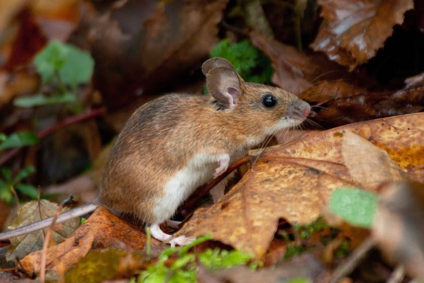
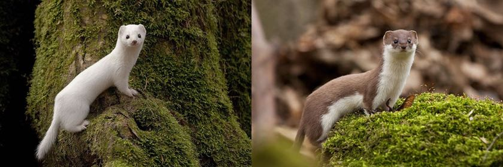
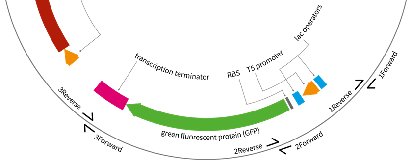

Our research
Ongoing projects
Phylogeography of Apodemus mice
Rodents from the genus Apodemus are the most common mammals of the Paleoarctic region and the main interest of our group. They occupy environments as different as Spain and Siberia, contribute to spread of human diseases like Lyme borreliosis and tick-borne encephalitis and are a rich target for evolutionary studies. However, they are very underdeveloped in terms of their genomic and genetic resources. Our long-term goal is to help establish Apodemus as a full–blown model organism and utilise its generalist ecology for studies of evolution in the wild.

The major project we are currently undertaking is on improving the European phylogeography of the two species, Apodemus flavicolis (yellow-necked mouse, also confusingly called wood mouse in Polish) and Apodemus sylvaticus (wood mouse). The goal is to collect and describe large(ish)-scale (n > 350 samples) data on genetic diversity and connectivity of the species and help answer some of the mysteries of recolonisation of Europe by small mammals following the last glaciation. The project is helmed by Maria Luisa Martin Cerezo and utilises restriction-site-associated DNA sequencing (RAD-seq) to obtain whole-genome, high-density genotypes even without a reference genome. It has been possible thanks to a number of colleagues across Europe, from Scotland and Portugal through Serbia to Lithuania, who provided samples from across the range of both species.
The first publication from this project, a small-scale phylogeographic analysis of Polish populations of Apodemus, has been published in 2020: Population structure of Apodemus flavicollis and comparison to Apodemus sylvaticus in northern Poland based on RAD-seq.
Genetics and energetics in Apodemus mice
The second project, run by Rohan Raval in collaboration with Drs Karol Zub and Jan Boratyński at the Mammal Research Institute of the Polish Academy of Sciences (MRI PAS) in Białowieża, Poland, will characterise the patterns of metabolic rates in a single population of A. flavicolis continually sampled for multiple seasons. The project involves genotyping and pedigree analysis of a large, wild population of mice and lab-based measures of basal metabolic rates (BMR) and torpor. Our goal is to measure heritability of BMR in the wild throughout multiple seasons as well as in-depth characterisation of population structure and dynamics.
Ongoing small projects
A set of projects that get pushed forward only when me and willing students have enough time to devote to them.
Analysis of non-target sequences in a large-scale RAD-seq experiment
After amassing data from almost 1500 samples of Apodemus mice, we realised that a non-trivial proportion of reads we collect come not from Apodemus but other organisms “contaminating” the samples. We were keen to see whether sequences of some of the parasites and vectors that Apodemus carry, such as ticks, Borrelia or hantaviruses could be retrieved from these carryover sequences. After Marisa checked that, indeed, Borrelia and Ixodes could be sequenced in our Apodemus RAD-seq protocol, Haeyam took over and during her placement she established a proof-of-principle, Kraken-based screen for microbial and insect sequences in our samples. This original idea was subsequently worked on by Ray (Wayne-hon Lau, my once placement student) to turn it into a proper pipeline to use in our future experiments, RAD-seq or otherwise.
R-based resources to support teaching
maudR
Some time during the pandemic lockdown phase, Dr Richard Bingham had an idea about generating a set of datasets that simulate a typical enzyme activity practical in undergraduate biology laboratory. He wrote an initial code for alcohol dehydrogenase and a series of its inhibitors, which I then expanded and scripted to also automatically generate a sesies of A4 PDFs with individual solutions to students’ tasks (absorbance vs. time, Michaelis-Menten and Lineweaver-Burke plots).
After contributions from Dr Shamus Burns, Wayne-hon Lau and Lewis Ward, this code is now being turned into an R package, soon to be released on Github. Lewis and me are both using maudR to learn how to write an R package; Lewis presented this idea as a poster during the PopGroup UK 58 meeting in Sheffield in 2025.
I presented this idea during the nBUG 9 meeting in Liverpool and during the useR! conference in Salzburg in 2024. Here are my (static) slides from the talk and a Github repo where you can download the R project files to use it (not a package yet though!).
huddR
In 2025, a group of keen 2nd year undergraduate students (Ana, Chantay, Fern, Layane and Sofia) got together in the revived Coding Club to complete a long-standing idea of mine: to produce an online textbook to support teaching of R programming to our 2nd year biology students. Our goal is to have something like the wonderful PsyTeachR resources, particularly their Data Skills book, but tailored to what and how we teach students. So far (I am writing this in February, one month after we started), the very rough draft of the book is out there and it will only get better from there.
We (myself included) will use this project also to learn version control through Git and Github and how to collaborate on a coding project.
Easy PCA and ADMIXTURE plots from 1000 Genomes Project in R
TBA
Semi-automatic phylogenetic trees from bulk NCBI sequences
TBA
Completed projects
Seasonal coat colour change in Mustela nivalis weasels
There are two subspecies of least weasels in north–eastern Poland. Mustela nivalis nivalis and Mustela nivalis vulgaris. They live in relative sympatry (M. n. vulgaris is a recent invader from the south) and are similarly-looking during most of the year. However, when the days start to get shorter, the coat of the M. n. nivalis changes to completely white, providing it with camouflage and increased survival on snow cover, whereas the coat of the M. n. vulgaris stays a similar shade of brown during the entire year.

We are collaborating with Dr Karol Zub at MRI PAS and Dr José Melo-Ferreira at the Research Centre in Biodiversity and Genetic Resources at the University of Porto on elucidating the molecular and evolutionary forced underlying the seasonal colour change.
We started from Sanger–sequencing a host of putative candidate genes affecting coat colour in order to exclude a possibility of stable coding-sequence polymorphism affecting coat colour change, however, we were unable to proceed much further due to lack of fresh samples of Mustela. Fortunately, our colleagues in Portugal were much more successful with their high-throughput sequencing of museum samples.
The paper has now been published in MBE (open access!): Museomics dissects the genetic basis for adaptive seasonal colouration in the least weasel.
Analysis of sequencing reads with chimeric adapters in a large-scale-multiplexing RNA-seq experiment
In the course of some of the research described above, we designed and tested sequencing adapters and library preparation methods that enabled us to characterise the types of polymerase mishaps that happen whenever multiple different templates are being amplified together. Marisa and Rohan have been working on analysing various types of chimeric reads that are generated during our large-scale experiments with a view to improve existing protocols to minimise the influence of such reads on genotyping.
The paper has now been published in Molecular Ecology Resources (open access!): Identification and quantification of chimeric sequencing reads in a highly multiplexed RAD-seq protocol.
Experimental teaching resources in synthetic biology
This project is completed, but every now and then we attempt to design and test new parts for UNIGEMS. If we succeed, they will be deposited in Addgene.
Synthetic biology has enjoyed an explosive growth and a dramatic rise in prominence in the last decade, but the branch of synthetic biology that focuses on standardisation of DNA parts and thorough characterisation of genetic circuits still appears to be somewhat less than what it should be (with the fantastic exception of the International Genetically Engineered Machines competition). There is still a lack of well–characterised and tested sets of parts that allow for introducing synthetic biology concepts and techniques to secondary schools.

National Centre for Biotechnology Education at the University of Reading have been working on a Wellcome Trust–funded project to develop experimental resources in synthetic biology for the A-level education, following our previous work on the UNIGEMS project. This project was completed by Alexandra Siddall and the set of 10 plasmids with various DNA parts is available at http://www.addgene.org/Jaroslaw_Bryk/.
The paper has now been published: Unigems: plasmids and parts to facilitate teaching on assembly, gene expression control and logic in E. coli.; extra materials are available on Figshare and the plasmids are available at Addgene. 
Rabbit’s Friends and Relations
Our research would not be possible without these fantastic collaborators:
Dr Frank Yinnguan Chan and Marek Kucka from the Friedrich Miescher Laboratory of the Max Planck Society in Tübingen, Germany (sequencing, library preparation). Frank is currently at the University of Groningen.
Dr Karol Zub and Dr Jan Boratyński from the Mammal Research Institute of the Polish Academy of Sciences (MRI PAS) in Białowieża, Poland (Apodemus and Mustela samples, energetics, ecology).
Dr Jose Melo-Ferreira from the Research Centre in Biodiversity and Genetic Resources at the University of Porto, Portugal (Mustela coat colouration).
Dr Steve Patterson from the University of Liverpool, UK (Apodemus 10x Genomics sequencing, genome annotation)
Dr Agnieszka Kloch from the University of Warsaw, Poland (RAD-seq, Microtus and their parasites).
Dr Emilie Hardouin from the University of Bournemouth, UK (RAD-seq, foxes and squirrels).
Dr Fiona Lane and Dr John Schollar from the National Centre for Biotechnology Education at the University of Reading, UK (synthetic biology, education).
Dr Vicki Trowler and Dr John Stephenson from the University of Huddersfield (student attainment project).
Many others, who provided samples and/or expertise on Apodemus phylogeography, sample preparation and/or data analysis, especially: Dr Jochan Michaux, Dr Allan McDevitt, Dr Jeremy Herman, Dr Vladimir Jovanovic.
Funders
Our work has been supported by the University of Huddersfield, BBSRC STARS programme, Microsoft Azure for Research, Google Cloud Platform and the NERC Biomolecular Analysis Facility.